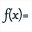
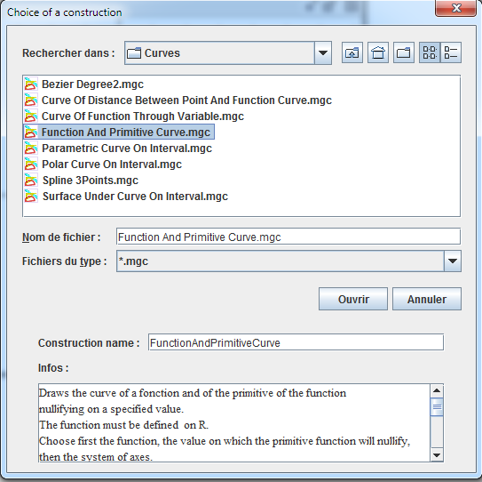
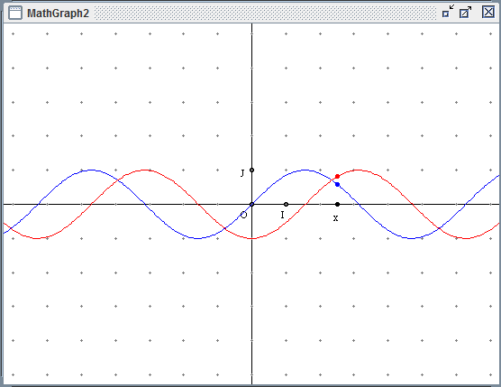

Constructions are one of the most powerful features of MathGraph32.
Constructions are some sort of figures which can be incorporated in other figures.
A construction utilizes objects belonging to the figure in which the construction is to be implemented called sources objects.
It uses internal objects (called intermediary objects) to create new objects (called final objects). The finale objects will be available to the user who will be able to use them for creating other objects.
Sources and final objects cab be numerical or graphical objects.
Frames are taken as a numerical object.
Numerical source object are allowed to be :
Graphical sources objects are allowed to be :
To be valid, a construction must obey the following rule :
Final objects are only allowed to be constructed with the sources objects selected and every source object must be used at least one time for the creation of a final object.
Just a single exception to this rule : if final objects are constructed using sources objects and a variable which is not a source object, the construction will be accepted and the variable will be part of intermediary objects.
Constructions are saved in files with extension mgf.
A construction is incorporated in a figure via menu Constructions - incorporate a construction in figure from file.
A construction already created or incorporated in a figure may be implemented in the figure via menu Constructions - implement construction from figure.
A construction is saved in a file via menu Constructions - Save construction of figure to file.
Predefined construction are available via menu item Constructions - Implement predefined construction.
To implement a user-defined construction, use menu item Constructions - Implement construction from file.
When a construction has been implemented in a figure, it is possible to get all intermediary objects becoming normal objects using menu Constructions - Merge constructions implemented in figure.
How to define a construction.
For a construction to be defined, sources objects must be chosen first.
It is important to understand that, when a construction is implemented numerical objects (if any) will have to be chosen first.
Choice of sources objects is made through menus Constructions - Sources objects choice.
Sources and final objects may be graphical or numerical objects.
The numerical objects are always to be specified first when a construction is implemented.
Sources objects chosen, you must choose final objects. It is only possible to select final objects constructed only through sources objects.
Final objects choice is made through menus Final objects choice.
Final and sources objects choice can be canceled via menu Constructions - Reset current construction.
How to implement a construction.
If the construction contains both graphical and non graphical sources objects, non graphical objects are to be chosen first.
To be noticed : If a construction uses a single non graphical object which is a frame and if only a frame is present in the figure, this frame will be automatically chosen as first source object and the non graphical sources objects dialog box will not appear.
We will use an example using a predefined macro FunctionAndPrimitiveCurve which is available with MathGraph32.
Use menu File - New file with - frame without vectors to create a new figure.
Use shortcut Ctrl + F or icon  to create a new real function named f with formula f(x) = sin(x). Don't check the Draw curve checkbox.
Now use menu Construction - Implement construction from file.
A dialog box pops up in the directory chosen in menu Preferences - Constructions directory or in the usual directory if this choice was not done.
Go to the directory containing the macro FunctionAndPrimitiveCurve.
Let's us quote that when you click on a mgc file, information on the construction is available in the dialog box.
Click on the name of the construction the click Open as shown underneath.

A dialog box pops up for the numerical sources objects.
First numerical source object is function f. Select it as follows :

The second numerical source object is the zero of the primitive function of f.
We can choose an already defined numerical value or enter a formula. Enter formula pi/2.

The third source numerical object is the frame as follows.

Click OK to validate.
There is here no graphical source object to choose.
Our construction is implemented.
Here is the final figure :

Click on F6 to see the numerical objects created.
Created with the Personal Edition of HelpNDoc: Easily create iPhone documentation